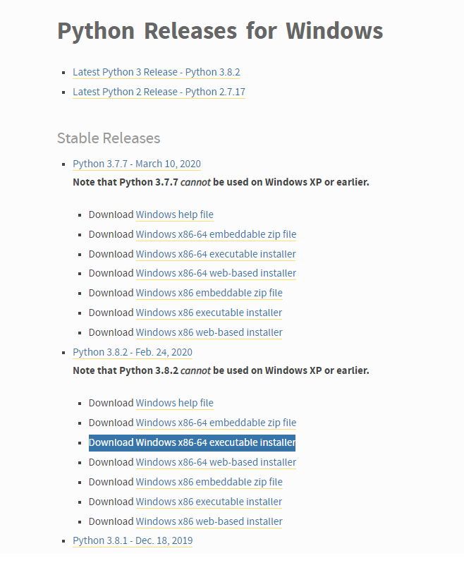
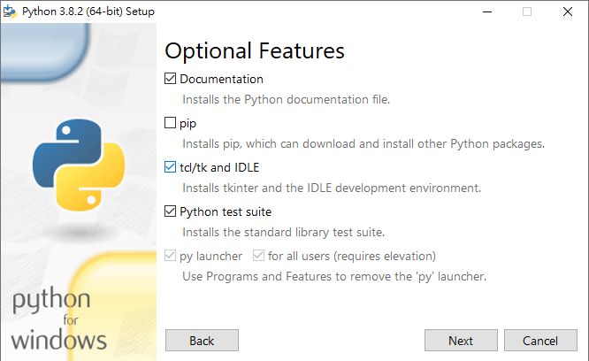
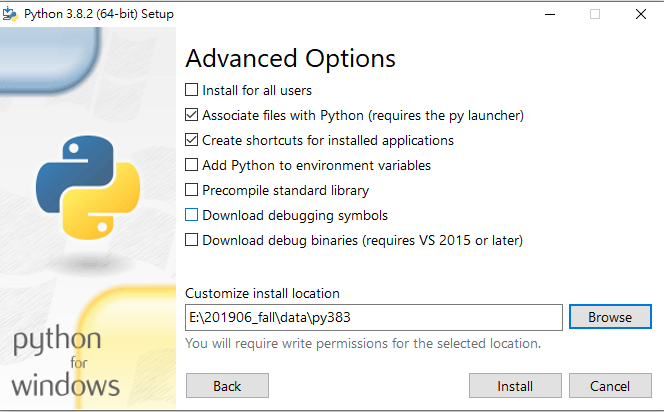
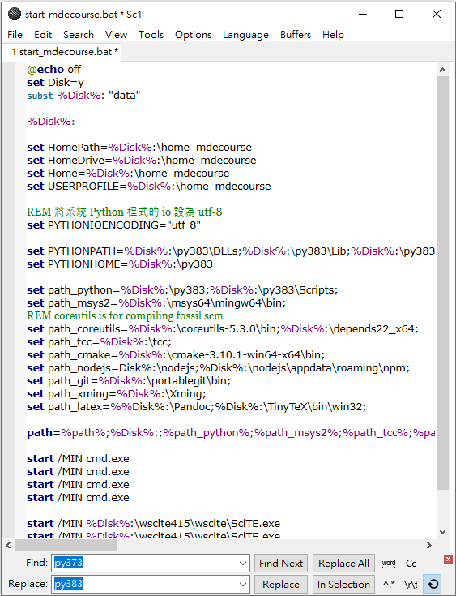
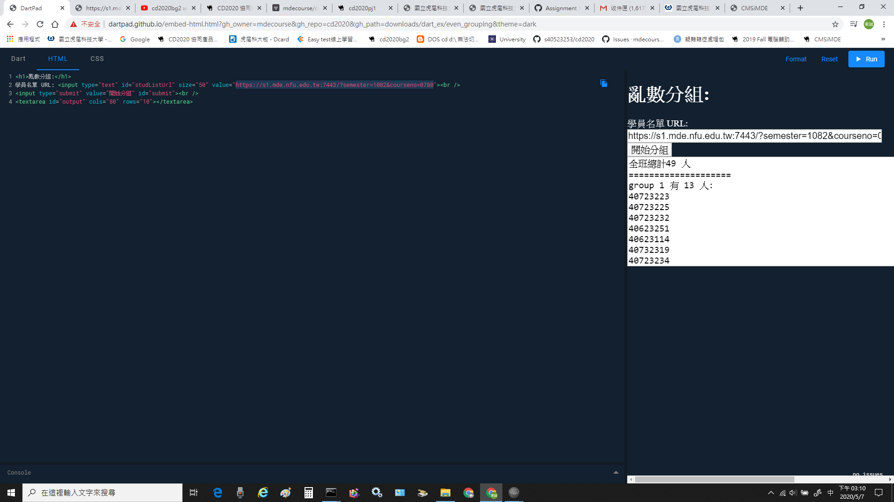

Develop <<
Previous Next >> week6~9
week1~5
week1:
登入自己的github帳戶，並且創建"cd2020"的個人倉儲。
用cmsimde建立網站
步驟:
week2:
更新可攜系統下的python 3.7.3至python 3.8.2
1.進入官網下載區 : https://www.python.org/downloads/windows/
2.下載 Windows x86-64 executable installer

3.安裝pyehon 3.8.3 ，安裝時不勾選pip

4.安裝時到自己可攜的data 新增一個資料夾叫py383，安裝路徑選此處201906_fall\data\py383

5. 用Scite.exe 更改執行檔start_mdecourse.bat，將py373全部取代成py383

6.執行python get-pip.py和python -m pip install flask flask-cors markdown lxml bs4 pelican leo
week3:
Assignment 1:
Due March 25, 2020 for class 2a and March 26, 2020 for class 2b.
-
Describe how to do an efficient random grouping for this course or do the roll calling randomly?
-
Describe how to prepare a portable Python programming system for Windows 10 64bit system to allow one the maintain CMSiMDE website, Pelican blog and Reveal.js presentation on Github?
-
What do you need to know from http://www.coppeliarobotics.com/helpFiles/index.html to implement a four-wheeled robot?
分工內容:
40523253 : 亂數分組程式
40623117 : 亂數分組程式
40623252 : 4輪車
40723221 (group leader) : 4輪車
40723222 : 4輪車
40723228 : 亂數分組程式
40723236 : 4輪車
40723237 : 可攜系統
40723240 : 4輪車
40723243 : 4輪車
40723244 : 可攜系統
40723249 : 可攜系統
40732331 : 4輪車
W2直播中我分配的是亂數分組
將班級名單網址貼到DartPad上執行即可亂數分組
DartPad:
https://dartpad.github.io/embed-html.html?gh_owner=mdecourse&gh_repo=cd2020&gh_path=downloads/dart_ex/even_grouping&theme=dark
設計二乙名單:
https://s1.mde.nfu.edu.tw:7443/?semester=1082&courseno=0780

Develop <<
Previous Next >> week6~9